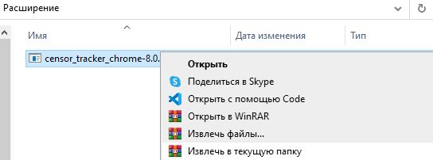
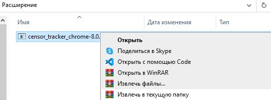

Censor Tracker
Расширение для обхода блокировок и выявления сайтов, которые следят за вами. Мы не зарабатываем на наших пользователях и не заглядываем в ваш трафик.
Расширение для обхода блокировок и выявления сайтов, которые следят за вами. Мы не зарабатываем на наших пользователях и не заглядываем в ваш трафик.
Такие сайты обязаны хранить и без решения суда предоставлять органам любую информацию о пользователях, в том числе сообщения и весь расшифрованный трафик с их сайта.
Команда Censor Tracker следит за реестром запрещенных в России сайтов. Сейчас в нём больше 400 000 адресов. Также команда Censor Tracker следит за цензурой в мире и помогает обходить блокировки в таких странах как - Украина, Азербайджан, Беларусь, Казахстан, Турция и другие.
Обычные плагины обходят блокировки только по реестру Роскомнадзора, но мы сделали обход внереестровых блокировок.
Расширение позволяет находить блокировки, которые делает Роскомнадзор по закону о «суверенном» рунете в обход реестра запрещенных сайтов, а мы в свою очередь сделаем их публичными.
Мы не храним логи в отличие от большинства коммерческих расширений.
Вы можете убедиться в этом лично, изучив исходный код Censor Tracker на GitHub.
Если ничего из этого вам не помогло напишите нам!
[username[:password]@]hostname:port (все что находится в [ ] скобках является не обязательным для ввода, например, если вы используете локальный SOCKS-прокси, то корректный ввод выглядит так - 127.0.0.1:3345).
Для того, чтобы воспользоваться SOCKS over Tor нужно:
127.0.0.1:9150 и нажмите кнопку СохранитьДля того, чтобы воспользоваться SOCKS over Psiphon нужно:
127.0.0.1:<порт, который отображается в логах Psiphon согласно выбранному протоколу> и нажмите кнопку Сохранитьhttp://flibustahezeous3.onion/) - не откроется, и вам нужно будет воспользоваться ссылкой нового образца (V3 - http://flibustaongezhld6dibs2dps6vm4nvqg2kp7vgowbu76tzopgnhazqd.onion/).


"Новую вкладку" и перейдите по этому адресу: about:debugging#/runtime/this-firefox.manifest.json.
 

"Новую вкладку" и перейдите по этому адресу: chrome://extensions."Режим разработчика".